Last updated: 2019-05-23
Checks: 5 1
Knit directory: drift-workflow/analysis/
This reproducible R Markdown analysis was created with workflowr (version 1.2.0). The Report tab describes the reproducibility checks that were applied when the results were created. The Past versions tab lists the development history.
The R Markdown is untracked by Git. To know which version of the R Markdown file created these results, you’ll want to first commit it to the Git repo. If you’re still working on the analysis, you can ignore this warning. When you’re finished, you can run wflow_publish to commit the R Markdown file and build the HTML.
Great job! The global environment was empty. Objects defined in the global environment can affect the analysis in your R Markdown file in unknown ways. For reproduciblity it’s best to always run the code in an empty environment.
The command set.seed(20190211) was run prior to running the code in the R Markdown file. Setting a seed ensures that any results that rely on randomness, e.g. subsampling or permutations, are reproducible.
Great job! Recording the operating system, R version, and package versions is critical for reproducibility.
Nice! There were no cached chunks for this analysis, so you can be confident that you successfully produced the results during this run.
Great! You are using Git for version control. Tracking code development and connecting the code version to the results is critical for reproducibility. The version displayed above was the version of the Git repository at the time these results were generated.
Note that you need to be careful to ensure that all relevant files for the analysis have been committed to Git prior to generating the results (you can use wflow_publish or wflow_git_commit). workflowr only checks the R Markdown file, but you know if there are other scripts or data files that it depends on. Below is the status of the Git repository when the results were generated:
Ignored files:
Ignored: .RData
Ignored: .Rhistory
Ignored: analysis/.Rhistory
Ignored: analysis/flash_cache/
Ignored: data.tar.gz
Ignored: data/datasets/
Ignored: data/raw/
Ignored: output.tar.gz
Ignored: output/
Untracked files:
Untracked: analysis/ebnm_bern.Rmd
Untracked: docs/figure/ebnm_bern.Rmd/
Unstaged changes:
Modified: analysis/index.Rmd
Modified: analysis/simple_tree_simulation.Rmd
Modified: analysis/simpler_tree_simulation_bimodal.Rmd
Modified: analysis/simplest_tree_simulation_bimodal.Rmd
Note that any generated files, e.g. HTML, png, CSS, etc., are not included in this status report because it is ok for generated content to have uncommitted changes.
There are no past versions. Publish this analysis with wflow_publish() to start tracking its development.
Here I explore solving the Empirical Bayes Normal Means problem with a Bernoulli prior. This could be useful for fitting highly constrained non-negative FLASH.
\[ \beta_j \sim Bern(\pi) \\ y_j | \beta_j \sim N(\beta_j, s^2_j) \] The marginal likelihood is given by:
\[ \begin{aligned} p(y_j |\pi) &= p(\beta_j=0)p(y_j | \beta_j = 0) + p(\beta_j=1) p(y_j|\beta_j =1) \\ &= (1-\pi)p(y_j|\beta_j=0) + \pi p(y_j|\beta_j=1) \end{aligned} \]
We can easily maximize the marginal likelihood to estimate \(\hat{\pi}\) using a root finding algorithm, such as Brent’s method. To compute the posterior mean we can simply use Bayes rule and plug in the estimated prior:
\[ \begin{aligned} E(\beta_j|y_j) &= p(\beta_j=1|y_j) \\ &=\frac{p(y_j|\beta_j=1)p(\beta_j=1)}{p(y_j|\beta_j=0)p(\beta_j=0) + p(y_j | \beta_j=1)p(\beta_j=1)} \\ &= \frac{p(y_j|\beta_j=1)\hat{\pi}}{p(y_j|\beta_j=0)(1-\hat{\pi}) + p(y_j | \beta_j=1)\hat{\pi}} \end{aligned} \]
library(ggplot2)
library(dplyr)
library(tidyr)Here are some helper function for simulation, fitting, and plotting.
sim = function(n0, n1, sigma_e){
n = n0+n1
beta = c(rep(0, n0), rep(1, n1))
s = abs(rnorm(n, 0, sigma_e))
betahat = rnorm(n, beta, s)
return(list(betahat=betahat, s=s, beta=beta, n=n))
}
nll = function(pi, data){
betahat = data[[1]]
s = data[[2]]
liks = (1.0-pi) * dnorm(betahat, mean=0, sd=s) + pi * dnorm(betahat, mean=1, sd=s)
loglik = sum(log(liks))
return(-loglik)
}
est_pi = function(betahat, s){
fit = optim(par=c(.5),
fn=nll,
data=list(betahat, s),
method="Brent",
lower=0,
upper=1)
pihat = fit$par
return(pihat)
}
est_post = function(betahat, s, pihat){
c0 = dnorm(betahat, mean = 0, sd=s) * (1 - pihat)
c1 = dnorm(betahat, mean = 1, sd=s) * pihat
pm = c1 / (c0 + c1)
return(pm)
}
plot_sim = function(df, title){
gath_df = df %>% gather(variable, value, -idx, -s)
p0 = ggplot(gath_df, aes(x=idx, y=value,
color=factor(variable, levels=c("beta", "betahat", "betapm")))) +
geom_point() +
theme_bw() +
labs(color="") +
xlab("Variable") +
ylab("Value") +
theme(legend.position="bottom")
min_betahat = min(df$betahat)
max_betahat = max(df$betahat)
p1 = ggplot(df, aes(betahat, betapm, color=s)) +
geom_point() + viridis::scale_color_viridis() +
theme_bw() +
theme(legend.position="bottom") +
xlim(c(min_betahat, max_betahat)) +
ylim(c(min_betahat, max_betahat)) +
geom_abline()
p = cowplot::plot_grid(p0, p1, nrow=1)
title = cowplot::ggdraw() + cowplot::draw_label(title)
print(cowplot::plot_grid(title, p, ncol=1, rel_heights=c(0.1, 1)))
}n0=10
n1=90
sigma_e=.25
sim_res = sim(n0, n1, sigma_e)
betahat = sim_res$betahat
s = sim_res$s
beta = sim_res$beta
pihat = est_pi(betahat, s)
betapm = est_post(betahat, s, pihat)
df = data.frame(betahat=betahat, beta=beta, betapm=betapm, s=s, idx=1:length(betahat))
title = paste0("n0=",n0, ",n1=", n1, ",sigma_e=", sigma_e, ",pihat=", round(pihat, digits=3))
plot_sim(df, title)I simulated a bunch of normal means scenarios where the true \(\beta\)s are set to 0 or 1. In each simulation I specify the number of zeros n0 the number of ones n1 and standard deviation used to simulate std. errors.
n0 = c(rep(40, 3), rep(25, 3), rep(10, 3), rep(0, 3))
n1 = c(rep(40, 3), rep(55, 3), rep(70, 3), rep(80, 3))
sigma_e = rep(c(.05, .1, .25), 4)
for(i in 1:length(n0)){
sim_res = sim(n0[i], n1[i], sigma_e[i])
betahat = sim_res$betahat
s = sim_res$s
beta = sim_res$beta
pihat = est_pi(betahat, s)
betapm = est_post(betahat, s, pihat)
df = data.frame(betahat=betahat, beta=beta, betapm=betapm, s=s, idx=1:length(betahat))
title = paste0("n0=",n0[i], ",n1=", n1[i], ",sigma_e=", sigma_e[i], ",pihat=", round(pihat, digits=3))
plot_sim(df, title)
}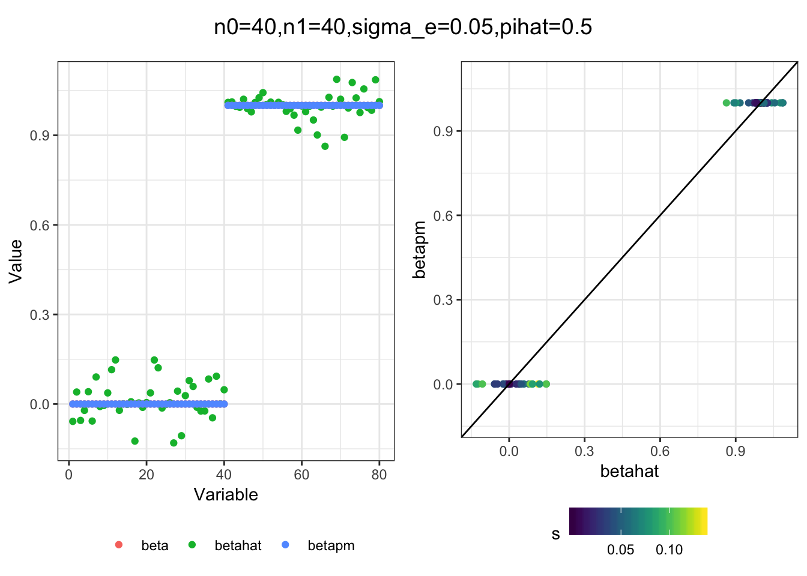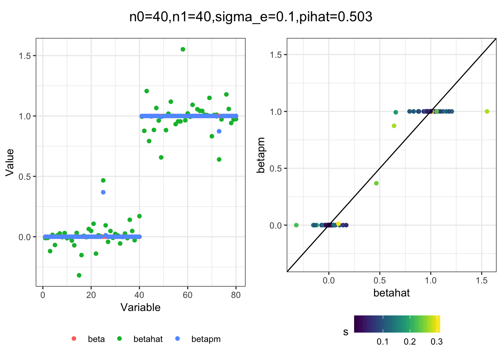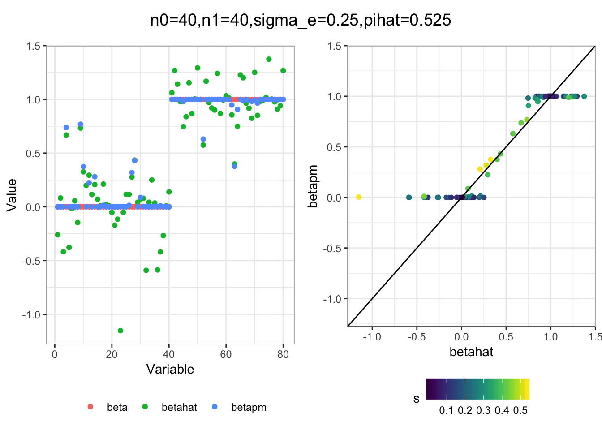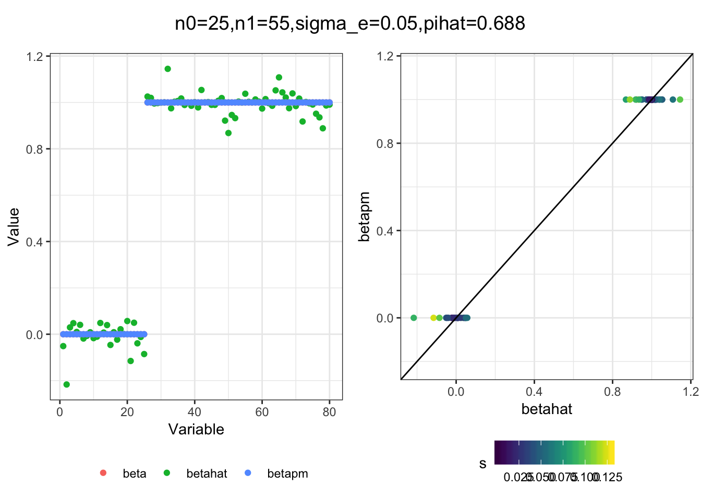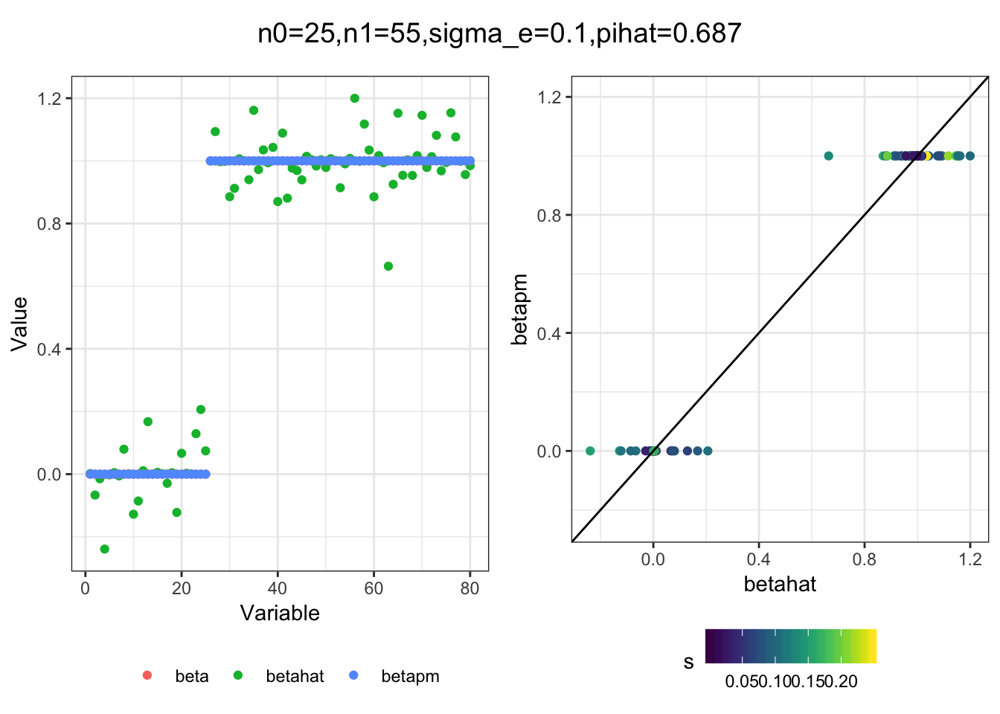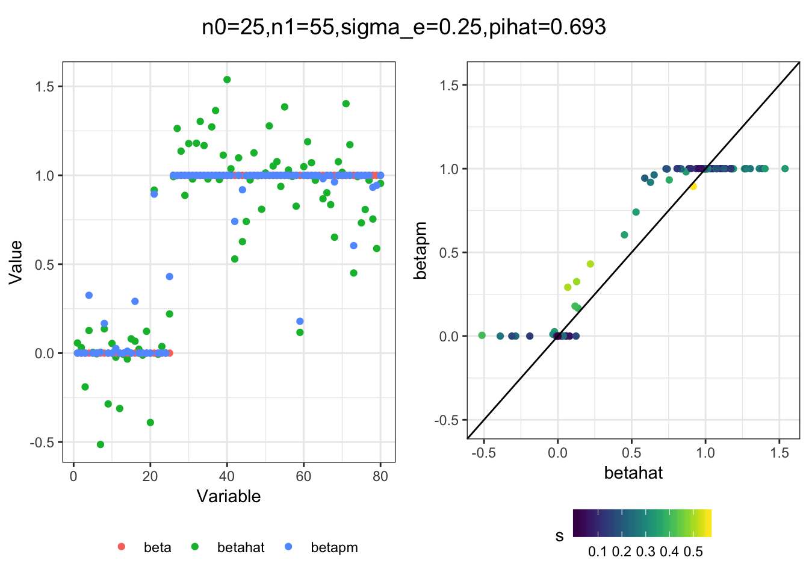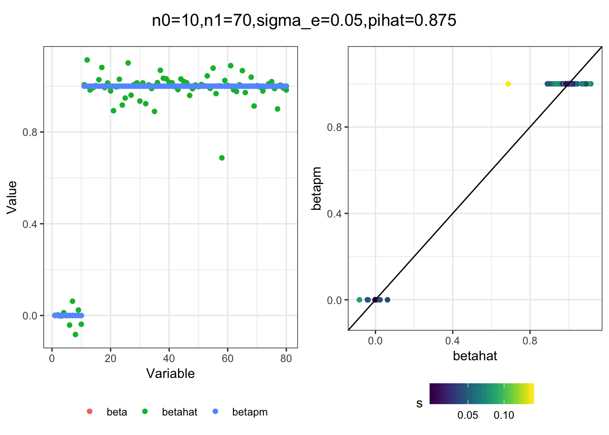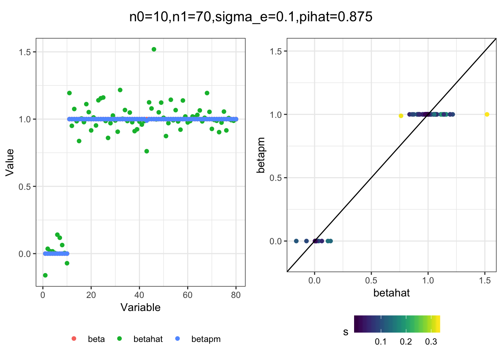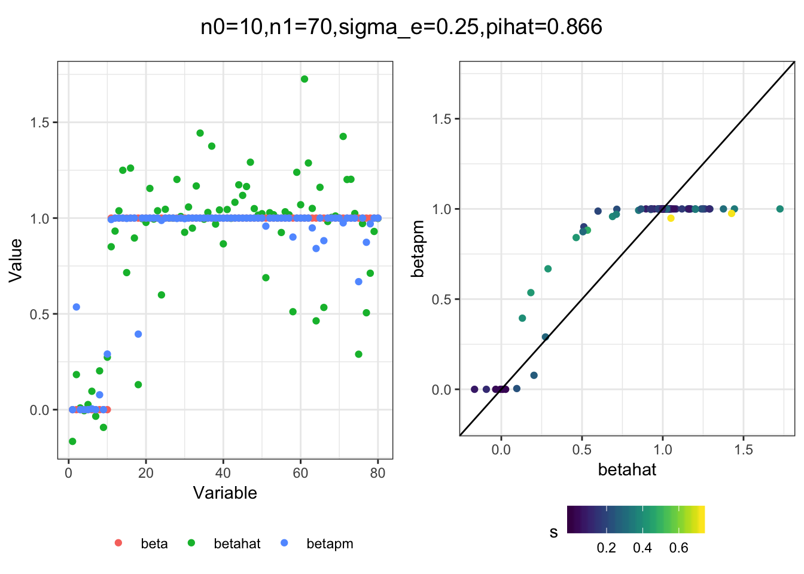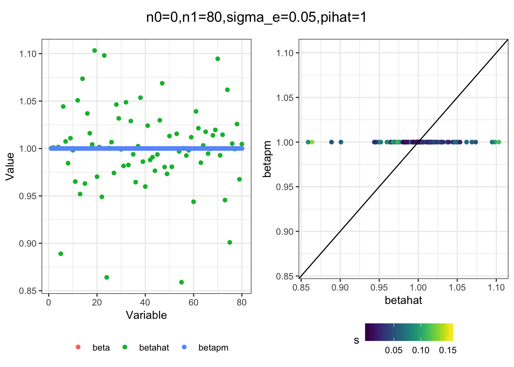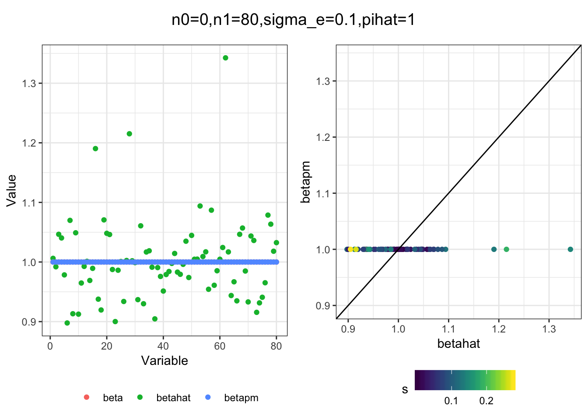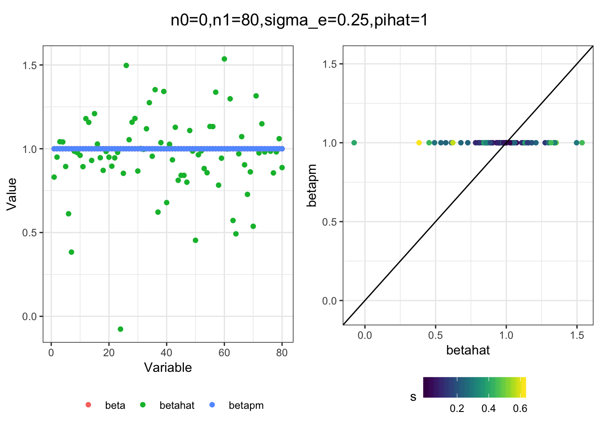
sessionInfo()R version 3.5.1 (2018-07-02)
Platform: x86_64-apple-darwin13.4.0 (64-bit)
Running under: macOS 10.14.2
Matrix products: default
BLAS/LAPACK: /Users/jhmarcus/miniconda3/lib/R/lib/libRblas.dylib
locale:
[1] en_US.UTF-8/en_US.UTF-8/en_US.UTF-8/C/en_US.UTF-8/en_US.UTF-8
attached base packages:
[1] stats graphics grDevices utils datasets methods base
other attached packages:
[1] tidyr_0.8.2 dplyr_0.8.0.1 ggplot2_3.1.0
loaded via a namespace (and not attached):
[1] Rcpp_1.0.1 compiler_3.5.1 pillar_1.3.1
[4] git2r_0.23.0 plyr_1.8.4 workflowr_1.2.0
[7] viridis_0.5.1 tools_3.5.1 digest_0.6.18
[10] evaluate_0.12 tibble_2.0.1 gtable_0.2.0
[13] viridisLite_0.3.0 pkgconfig_2.0.2 rlang_0.3.1
[16] yaml_2.2.0 xfun_0.4 gridExtra_2.3
[19] withr_2.1.2 stringr_1.4.0 knitr_1.21
[22] fs_1.2.6 cowplot_0.9.4 rprojroot_1.3-2
[25] grid_3.5.1 tidyselect_0.2.5 glue_1.3.0
[28] R6_2.4.0 rmarkdown_1.11 purrr_0.3.0
[31] magrittr_1.5 backports_1.1.3 scales_1.0.0
[34] htmltools_0.3.6 assertthat_0.2.1 colorspace_1.4-0
[37] labeling_0.3 stringi_1.2.4 lazyeval_0.2.1
[40] munsell_0.5.0 crayon_1.3.4